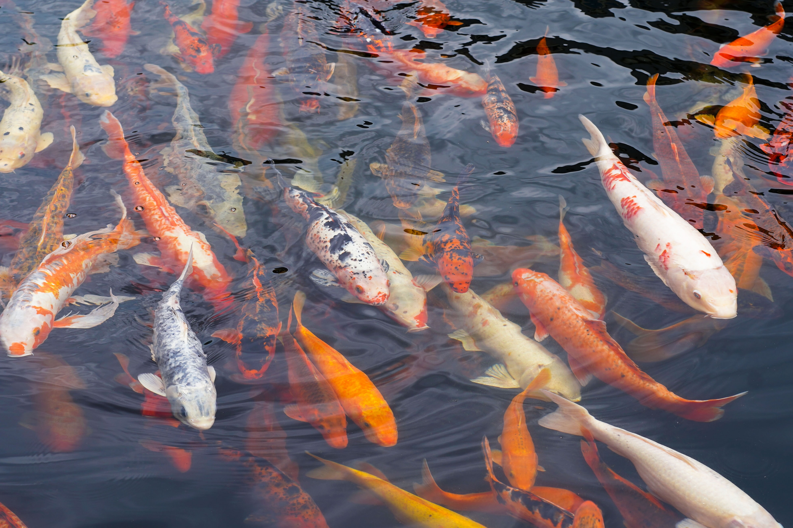
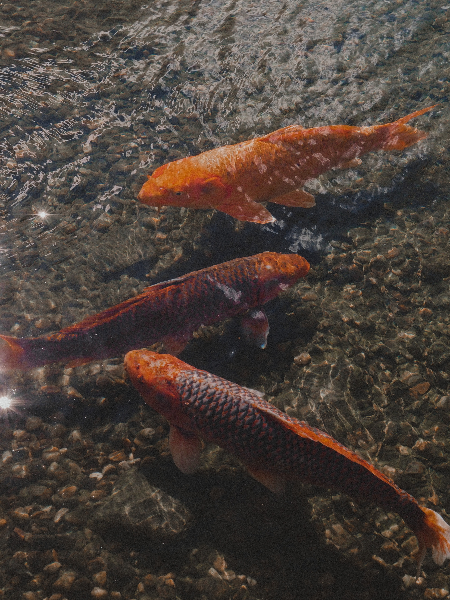

Aquayard Blogs
How to Create a Healthy Environment for Your Koi Fish
 If you're new to koi fish ownership, it's critical to understand how to keep your fish healthy. In this post, we'll go over the fundamentals of koi fish care and offer some suggestions for keeping your fish healthy and happy.
Top 5 Koi Fish Varieties You Need To Know About
Gosanke
The Gosanke Koi Fish class is categorized by koi with solid white (shiro) that is overlaid with either the hi (red) or sumi (black), or a combination of all three.
Kohaku
Kohaku is a bright-white koi patterned with red. There are two types of Kohaku – one has the red pattern all over it and is the most common. The second type of Kohaku only has a red spot in the middle of the forehead.
Taisho
The Taisho Sanke (TYE-shoh SAHN-keh), often shortened to Sanke, is a koi with three different colours. A Sanke will have a shiroji (white) base with a combination of hi (red) and sumi (black) markings along the body.
Showa Sanshoku
Showa is a variety of ornamental koi (carp). The Showa is also known as the Showa Sanshoku (昭和三色). The Showa has a black (sumi) body, with red (hi) and white (shiro) markings across the body.
Utsurimono
Utsurimono (oot-SOO-ree-MOH-noh), usually shortened to Utsuri, are a subvariety of koi who have a deep sumi (black) base colour with another, contrasting and bright accent colour overlaid on top of the black.